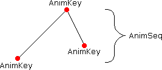

Hilfe
SetAnimKey

Aufruf
Parameter
Rückgabewert
Beschreibung
Beispiel
Siehe auch
SetAnimKey entity%, frame% [, verschiebung%] [, rotation%] [, skalierung%]
Parameter
| entity% | Identität eines Objekts (entity) |
| frame% | Zeitindex für Animation (Frames) |
| verschiebung% |
0=Verschiebung nicht beachten
1=Verschiebung zur Animation hinzufügen (Standard) |
| rotation% |
0=Rotation nicht beachten
1=Rotation zur Animation hinzufügen (Standard) |
| skalierung% |
0=Skalierung nicht beachten
1=Skalierung zur Animation hinzufügen (Standard) |
Rückgabewert
-
Beschreibung
Die Anweisung SetAnimKey setzt die Animationsparameter für ein Objekt (entity).
Der Parameter "frame%" gibt den Zeitindex an. Es fängt mit 0 an und wird mit nachfolgenden SetAnimKey-Befehlen erhöht (siehe Beispiel).
Wenn Verschiebung, Rotation oder Skalierung beachtet werden soll, dann muss man bei den entsprechenden Parametern 1 angeben, andernfalls 0.

Beispiel
Dieses Beispiel zeigt die Wirkung verschiedener Animationsbefehle:
Graphics3D 640, 480, 16, 2
SetBuffer BackBuffer()
camera = CreateCamera()
light = CreateLight()
cube = CreateCube()
PositionEntity camera, 0, 0, - 5
RotateEntity light, 90, 0, 0
EntityColor cube, 150, 200, 250
RotateEntity cube, 0, 0, 0
PositionEntity cube, - 2, 0, 2
SetAnimKey cube, 0
RotateEntity cube, 30, 30, 30
PositionEntity cube, 2, 0, 2
SetAnimKey cube, 100, 1, 1
RotateEntity cube, 180, 60, 60
PositionEntity cube, - 2, - 2, 5
ScaleEntity cube, 1, .5, 2
SetAnimKey cube, 200
AddAnimSeq cube, 200
Animate cube, 2
While Not KeyHit(1)
UpdateWorld
RenderWorld
Text 0, 0, "Animating:" + Animating(cube)
Text 0, 20, "AnimLength:" + AnimLength(cube)
Text 0, 40, "AnimSeq:" + AnimSeq(cube)
Text 0, 60, "AnimTime:" + AnimTime(cube)
Flip
Wend
End
SetBuffer BackBuffer()
camera = CreateCamera()
light = CreateLight()
cube = CreateCube()
PositionEntity camera, 0, 0, - 5
RotateEntity light, 90, 0, 0
EntityColor cube, 150, 200, 250
RotateEntity cube, 0, 0, 0
PositionEntity cube, - 2, 0, 2
SetAnimKey cube, 0
RotateEntity cube, 30, 30, 30
PositionEntity cube, 2, 0, 2
SetAnimKey cube, 100, 1, 1
RotateEntity cube, 180, 60, 60
PositionEntity cube, - 2, - 2, 5
ScaleEntity cube, 1, .5, 2
SetAnimKey cube, 200
AddAnimSeq cube, 200
Animate cube, 2
While Not KeyHit(1)
UpdateWorld
RenderWorld
Text 0, 0, "Animating:" + Animating(cube)
Text 0, 20, "AnimLength:" + AnimLength(cube)
Text 0, 40, "AnimSeq:" + AnimSeq(cube)
Text 0, 60, "AnimTime:" + AnimTime(cube)
Flip
Wend
End
Siehe auch
AddAnimSeq, LoadAnimSeq, Animate, Animating, AnimLength, AnimSeq, AnimTime, SetAnimTime